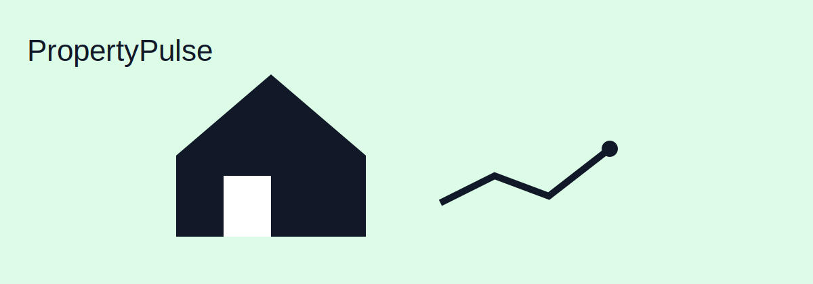

PropertyPulse
PropertyPulse is a real-estate style app idea where users can track properties and see basic insights. It’s the kind of project that mixes UI, data, and real-world usefulness.
External inspiration: Flutter
Kenny Vo
These are a few projects I’ve worked on (or want to keep improving). I’m keeping this page simple, but each item is structured like a real portfolio entry.
PropertyPulse is a real-estate style app idea where users can track properties and see basic insights. It’s the kind of project that mixes UI, data, and real-world usefulness.
External inspiration: Flutter
This project is about organizing real application features: employees, roles, and data operations. It’s good practice for clean structure and thinking like a developer instead of just writing random code.
Useful reference: Java Documentation
A simple Pong game where the paddle tracks the ball and the score increases when you make contact. I like it because it’s small, visual, and forces you to think carefully about input and movement.
Helpful learning resource: Pong (Wikipedia)
Email: voghuy17@gmail.com